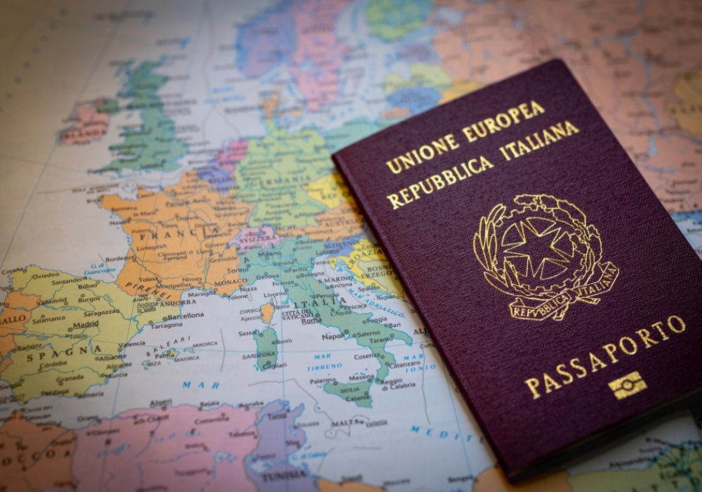

Conviértase en
ciudadano del mundo
En Ferrante Ciudadanía le ayudamos a recuperar sus raíces con el país de la bota.

En Ferrante Ciudadanía le ayudamos a recuperar sus raíces con el país de la bota.
Fue el fenómeno de migración masiva de italianos a diversos países del mundo, principalmente entre finales del siglo XIX y principios del siglo XX, el cual afectó de manera significativa la composición cultural de las naciones receptoras, especialmente en el continente americano. Por lo mismo, el reconocimiento de la ciudadanía italiana es un derecho que le corresponde a una parte significativa de la población alrededor del mundo.
Acompañamiento jurídico completo para tramitar tu ciudadanía italiana.
Traducción oficial y apostillado de tus documentos requeridos.
Paquete completo para gestionar tu ciudadanía vía judicial o directamente en Italia.
Con pasaporte italiano usted no tendrá problemas en pasar por inmigración. Solo debe dirigirse al área de “ciudadanos de la Unión Europea”.
Podrá postular a puestos de trabajo en Europa. Las personas con doble nacionalidad suelen ser más valoradas en el mercado laboral.
Tener doble nacionalidad italiana facilita el acceso a excelentes universidades europeas, tanto en programas de grado como posgrados, maestrías y doctorados. Además, podrá solicitar becas que priorizan a estudiantes europeos.
Con doble nacionalidad italiana no se necesita visa de turista para entrar a estos países, evitando procesos burocráticos extensos.
Ciudadanos italianos pueden solicitar la visa Working Holiday para trabajar hasta un año, con posibilidad de prórroga.
La ciudadanía italiana se transmite por el principio de Iure Sanguinis, es decir, un hijo de un italiano es considerado italiano desde su nacimiento.
Con la ciudadanía italiana, usted tendrá acceso a los mejores tratamientos médicos en Italia y en toda la Unión Europea.
Mientras que una persona común necesita al menos USD 500.000 para una visa de emprendedor en EE. UU., un ciudadano italiano puede hacerlo con solo USD 100.000.
Excelencia en servicio, de inicio a fin, claridad en las explicaciones y facilidad en todo el proceso.
Asesores súper atentos, me ayudaron con todas las orientaciones para mi proceso de ciudadanía. ¡Recomiendo mucho!
Excelente atención y gran profesionalismo. Asesoría de confianza en la emisión de visas y ciudadanía.